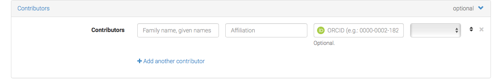
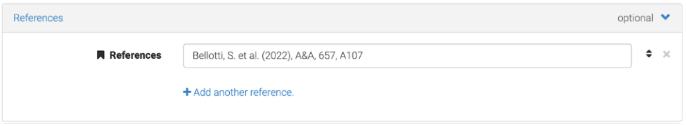
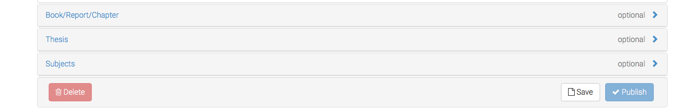

COOL STARS 21
4-9 July 2022, Toulouse, France
The "Cambridge Workshops of Cool Stars, Stellar Systems and the Sun" are held biennially and have evolved to be the premier conference series for cool star research.
The conference will be held in hybrid format. Registration is still open!
Proceedings for Cool Stars 20 will be
entirely electronic and freely available online. A collection of
participant contributions is made available
through Zenodo, an EU funded
data and project repository. All submissions must therefore be
made on Zenodo's webpage. To facilitate accessibilty and
visibility, all contributions to the proceedings will indexed on
the ADS.
Briefly, all submissions are assigned a Digital
Object Identifier (DOI) number by Zenodo,
making contributions
citeable. Once all contributions are received, ADS will be
notified, they will scrape the Zenodo collection, and then ADS
will index each of the contributions as part of a larger volume
(Proceedings for Cool Stars 20). To ensure that all entries
are properly indexed, it is vital that each contribution
include appropriate metadata. In the tutorial below, you'll be
instructed about which metadata to include in your submission.
Submission to
the arXiv in parallel with
submission to the conference proceedings is
encouraged. However, if you submit to the arXiv, you must make
sure to update the metadata in your Zenodo collection properly
so that it does not get listed twice in ADS.
Contributions are accepted from invited plenary session reviews, contributed plenary session talks and splinter session talks, and contributed posters. In addition, collective contributions from (parallel) splinter sessions and contributions from the CS20 hack day are welcome. If you would like to submit a typical conference proceeding, there are no formal page limits. However for some guidance, we recommend you limit yourself to 4-8 pages for contributed talks and 10-15 pages for invited talks. Those wishing to submit a written conference proceeding are encouraged to format the document using the Cool Stars 20 LaTeX document class. All such submissions should be made as PDFs and will be reviewed for content by the SOC and we may suggest edits.
Submission of presentation slides from speakers and full posters are also encouraged. PDF versions of these documents are the preferred format for Zenodo contributions to permit the documents to be previewed in a web browser. For maximum impact, you can submit both, a written contribution and your presentation slides and/or a poster to provide greater context. Contributions will be checked for the proper metadata.
Submitting to Zenodo is rather simple, but it's important that all metadata be
properly included so that articles get properly indexed on ADS. Below is a series
of screenshots taking you through the submission process from start to finish.
Step 01: following the link
to the submission page for Cool Stars 20. Click on the
green "New upload" button on the right side of
the screen.
Step 02: you'll be presented with a login screen:
If you have a Zenodo account, proceed to login. If you do not, you may login
using your GitHub or ORCID account, or you may create a new account using the "Sign Up"
button located at the bottom of the frame.
Step 03: Once you login, you'll be presented with an "Upload" screen:
Click the button to choose a
file on your local machine, or drag and drop a file
directly onto the screen.
Step 04: After you select a file where you will be
able to fill out a wide variety of file metadata on the
boxes below the upload box. Be sure that in
the "Communities" box you see "The 20th
Cambridge Workshop on Cool Stars, Stellar
Systems, and the Sun". If you do not see this,
start typing it into the search bar and it
will automatically pop up.
Step 05: Now, start filling out information about your document. First, select the type of file you have
just uploaded. Ignore the DOI field, Zenodo will take care of this for you, unless you know
for a fact that the document you're upload already has an assigned DOI. If you are unsure,
then it likely does not already have a DOI. Enter today's date for the publication date, if
it's not automatically done for you. Enter the title of your article/poster/talk.
Enter the name of each author and their affiliation. NOTE names should be formatted
as "Family Name, First name".
You will be asked to fix this if you do not do it correctly the first time.
It's important for ADS that this be done properly. Continue to fill in the requeted
information, including the Description (i.e., Abstract), various keywords if you'd like
to add keywords, and other notes you feel are important for the contribution (e.g., Poster
number, or a name of a splinter session the contribution if affiliated with.)
Step 07: Choose access rights and a license for your work. You are
strongly encouraged to select Open Access and a permissive license so that people
can easily access your work.
Step 09: Open the "Contributors" section by clicking on it. Add Scott Wolk as an editor. Again, note that the name must be "Scott Wolk". Select Editor from the dropdown menu.
Step 10: Given credit where credit is due! If you referenced various works in your article, talk, or poster, give them credit by adding the reference information (yes, citations will be counted on ADS, but ADS will only know about them if you enter the information in the "References" section). See the image below about how to format the references:
This is basically a copy-paste of a bibliography.
Step 11: Fill out information about the Workshop as shown below:
Step 12: Review the information to make sure you've done everything properly and then click "Publish"! Or, if you'd like save it and publish later, click "Save"
Step DONE: Congratulate yourself on a job well done.
Thanks to the CS19 team that provided very detailed instructions for their proceedings, which we adapted here for CS20.